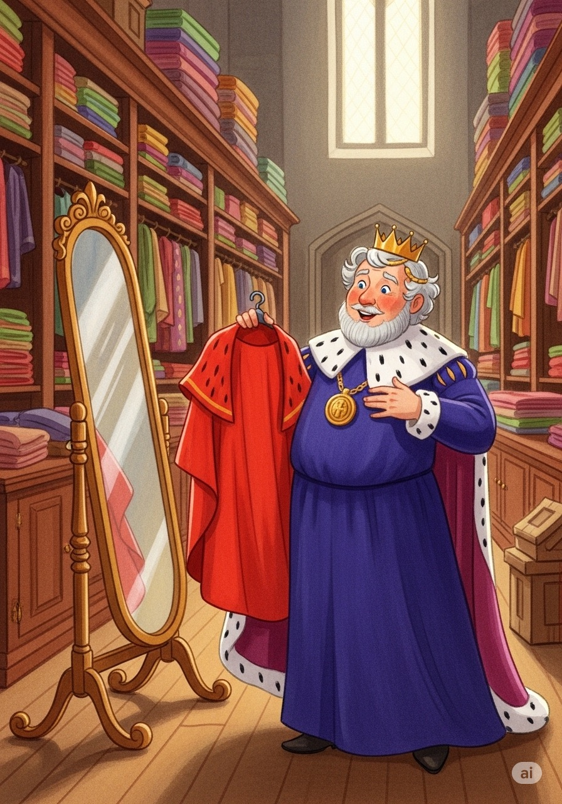
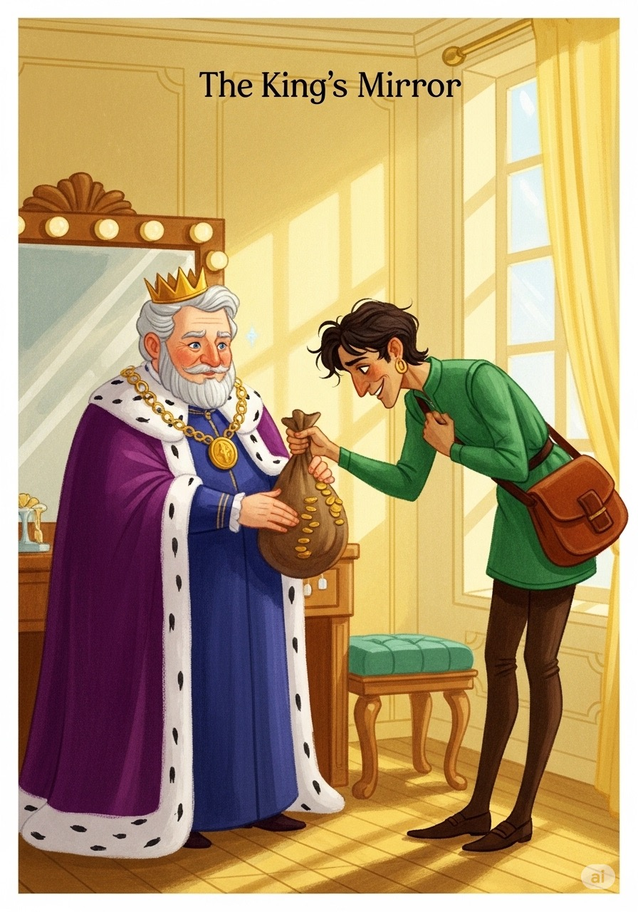
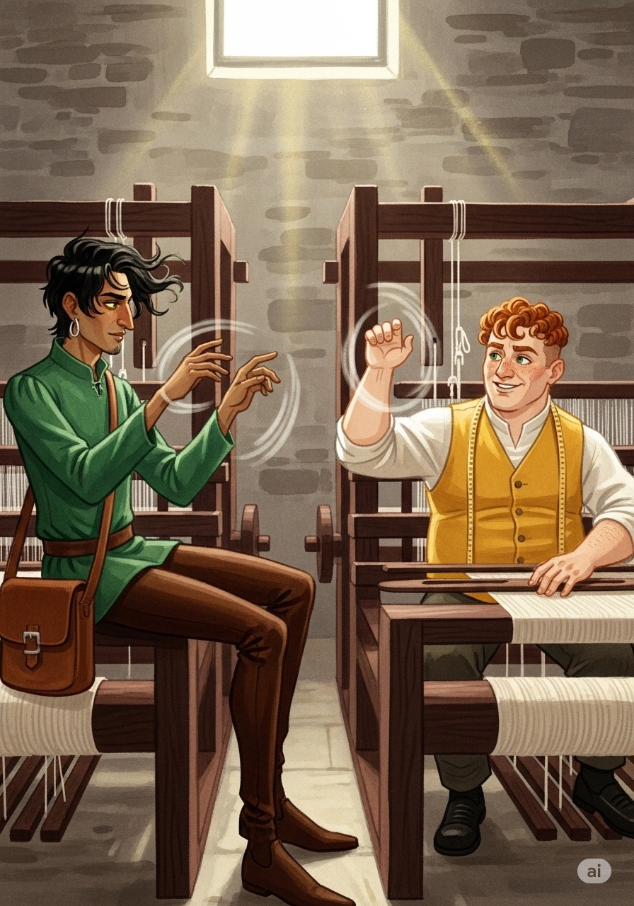
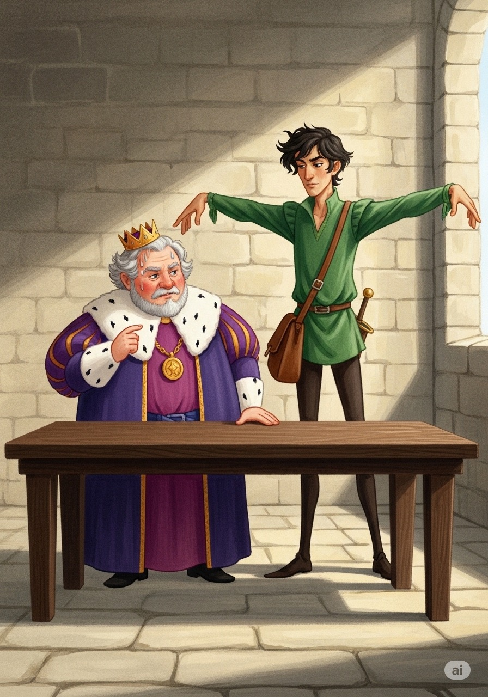
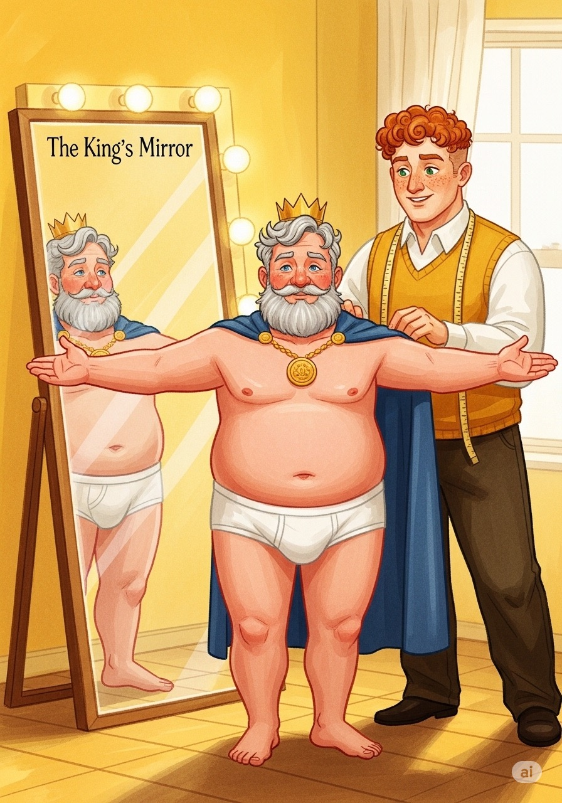
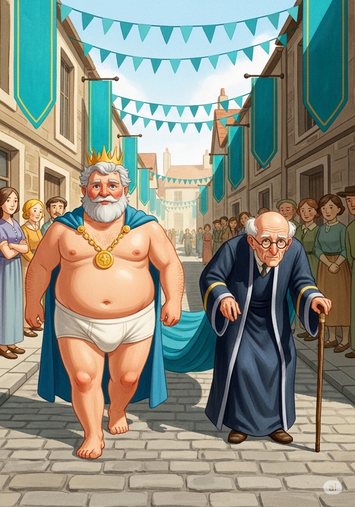
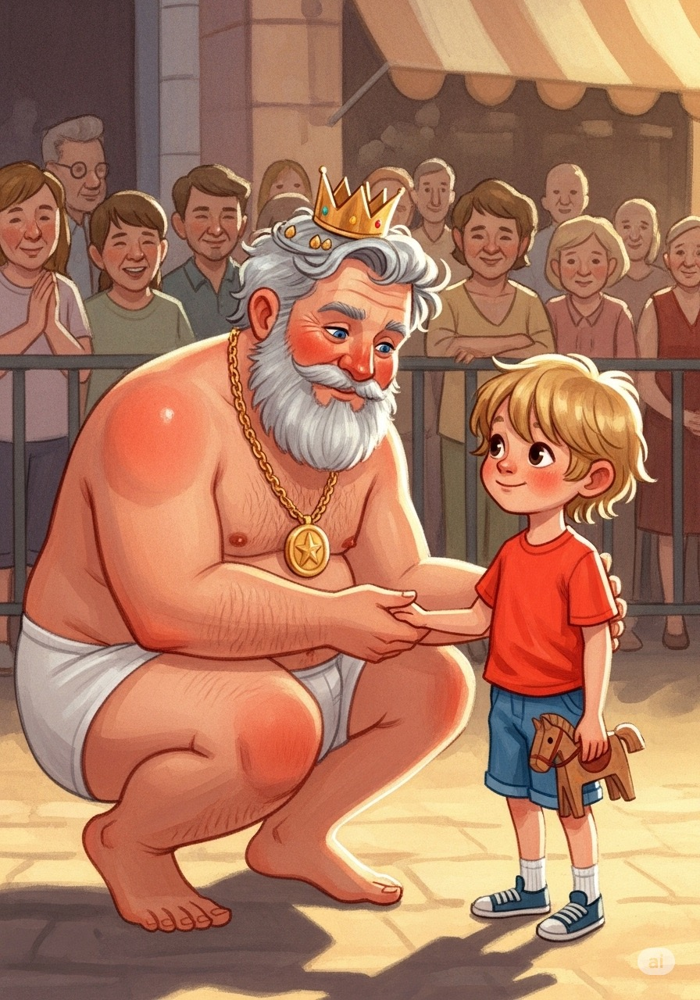

國王的新衣
古典寓言繪本
國王的新衣
古典寓言繪本
BERNE TING

1

昔國王，好華衣。
命巧匠，製新奇。
百官忙，不可息。
王怒喝，嫌舊跡。
下詔書，布全國。
求異服，賞金帛。
命巧匠，製新奇。
百官忙，不可息。
王怒喝，嫌舊跡。
下詔書，布全國。
求異服，賞金帛。
2
二騙子，自鄰邦。
入宮廷，誇其長。
織魔布，賽雲霓。
色斑斕，質如絲。
入宮廷，誇其長。
織魔布，賽雲霓。
色斑斕，質如絲。
3

唯賢者，方能見。
愚笨人，空餘羨。
王大喜，賞重金。
欲以此，辨臣心。
愚笨人，空餘羨。
王大喜，賞重金。
欲以此，辨臣心。
4

遣老臣，往察之。
機台空，無一絲。
臣惶恐，懼其名。
假稱讚，飾太平。
機台空，無一絲。
臣惶恐，懼其名。
假稱讚，飾太平。
5
又遣才，復觀瞧。
見虛無，心驚跳。
亦隨聲，頌其工。
稱陛下，福無窮。
見虛無，心驚跳。
亦隨聲，頌其工。
稱陛下，福無窮。
6

王親臨，視其成。
目所及，皆虛影。
恐自愚，強作歡。
讚神技，眾皆觀。
目所及，皆虛影。
恐自愚，強作歡。
讚神技，眾皆觀。
7

賜金牌，令巡遊。
示百姓，競風流。
解舊服，剩內衣。
幻為袍，手相隨。
示百姓，競風流。
解舊服，剩內衣。
幻為袍，手相隨。
8

言袖長，語身輕。
王顧影，自多情。
入市井，過長街。
民皆噤，讚金鞋。
王顧影，自多情。
入市井，過長街。
民皆噤，讚金鞋。
9
忽童子，指而笑。
王無衣，赤條條。
腹且大，更何言。
眾皆醒，笑喧天。
王無衣，赤條條。
腹且大，更何言。
眾皆醒，笑喧天。
10

王省悟，歸深宮。
賞誠實，嘆愚蒙。
逐浮華，愛庶民。
勤國政，德日新。
賞誠實，嘆愚蒙。
逐浮華，愛庶民。
勤國政，德日新。
11
可用滑鼠或手指拖曳頁角翻頁